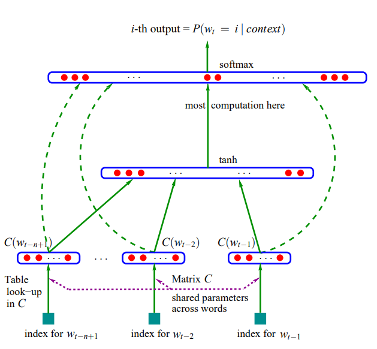

Be able to infer a likely sentance $s$ given the observed speech signal $a$.
The generative approach is to build two components:
Observation model, represented as $p(a|s)$, which tells us how likely the sentence $s$ is to lead to the acoustic signal $a$.
Prior, represented as $p(s)$, which tells us how likely a given sentence $s$ is. E.g., it should know that "recognize speech" is more likely that "wreck a nice beach".
Given these components, we can use Bayes' Rule to infer a posterior distribution over sentences given the speech signal: $$p(s|a) = \frac{p(s)p(a|s)}{\sum_{s'}p(s')p(a|s')}$$
Assume having a corpus of sentences $s^{(1)}, ..., s^{(N)}$. The ML criterion says we want our model to maximize the probability our model assigns to the observed sentences. Make the assumption that sentences are independent, so that the objective is $\max \prod^N p(s^{(i)})$.
Then, the log probability is something we can work with more easily. It also conveniently decomposes as a sum, which is equivalent to cross-entropy loss.
By chain rule of conditional probability (without any assumptions), $$p(s) = p(w_1,...,w_T) = \prod^Tp(w_i|w_1,...,w_{i-1})$$ With Markov assumption (memoryless model), $$p(w_t|w_1,...,w_{t-1}) = p(w_t\mid w_{t-3}, w_{t-2}, w_{t-1})$$
Using a conditional probability table, consider the empirical distribution $$p(w_3 | w_1, w_2) = \frac{p(w_3, w_2, w_1)}{p(w_1, w_2)}\approx \frac{\text{count of phrase w1 w2 w3}}{\text{count of phrase w1 w2}}$$ The above example is $3$-gram
The number of entries in the conditional probability table is exponential in the context length.
Data sparsity: most n-grams never appear in the corpus, even if they are possible (we can use a short context, or smooth the probabilities by adding imaginary counts to solve the problem).
Also, using an ensemble of n-gram models with different $n$ can deal with some data sparsity problem.
n-gram only have local information of the representations, but words can be related far away, e.g., similar part of sentences, similar meaning.
Input previous $K$ words
Target next word
Loss cross-entropy
http://www.jmlr.org/papers/volume3/bengio03a/bengio03a.pdf

Each word it trained to a distributed representation, which the representation is shared-weights across all models, then we have hidden layers that is to predict the words.
a simpler and faster approach based on a matrix factorization similar to PCA.
Hypothesis words with similar distributions have similar meanings
Consider a co-occurrence matrix $X$, which counts the number of times two words appear nearby (eg. distance = 5). This gives $V\times V$ matrix, $|V|=$vocabulary size
Intuition pump we want a rank-K approximation $X\approx R\tilde R^T$ where $R$ and $\tilde R$ are $V\times K$ matrices.
The final cost function is $$J(R) = \sum_{i,j}f(x_{ij})(r_i^T\tilde r_j + b_i + \tilde b_j - \log x_{ij})^2$$ $$f(x_{ij}) = \begin{cases}(\frac{x_{ij}}{100})^{3/4} &x_{ij} < 100 \\ 1 &x_{ij}\geq 100\end{cases}$$
Given loss $$\mathcal L(W,\beta) = \sum_{i=1}^V\sum_{j=1}^V (w_i^Tw_j + b_i + b_j - \log X_{ij})$$ where $W$ is $V\times d$ matrix, where each row is $w_i^T$ and $\beta$ is $V\times 1$ vector of $b_1,...,b_V$, $X$ is the $V\times V$ co-occurrence matrix.
\begin{align*} \frac{\partial \mathcal L}{\partial w_{vd}} &= \frac{\partial}{\partial w_{vd}}\sum_{i=1}^V\sum_{j=1}^V (\sum_{k=1}^d w_{ik}w_{jk} + b_i + b_j - \log X_{ij})^2\\ &= \sum_{j=1}^V 2(w_v^Tw_j + b_v + b_j - \log X_{ij})w_{jd} + \sum_{i=1}^V 2(w_i^Tw_v + b_i + b_v - \log X_{ij})w_{id}\\ &= 4\sum_{i=1}^V (w_v^Tw_i + b_v + b_j - \log X_{ij})w_{id}\\ \frac{\partial \mathcal L}{\partial w_v} &= 4\sum_{i=1}^V (w_v^Tw_i + b_v + b_j - \log X_{ij})w_{i} \end{align*}Given cross entropy loss $\mathcal L(t^{(i)},y^{(i)}) = -\sum_{j=1}^V t_j^{(i)}\log y_j^{(i)}$ where $t^{(i)}$ is a one hot vector and $y^{(i)}$ is one vector that sum to 1.
Then, each entry of $y^{(i)}, y_j = softmax(z_j) = \frac{\exp(z_j)}{\sum_{k=1}^V \exp(z_k)}$.